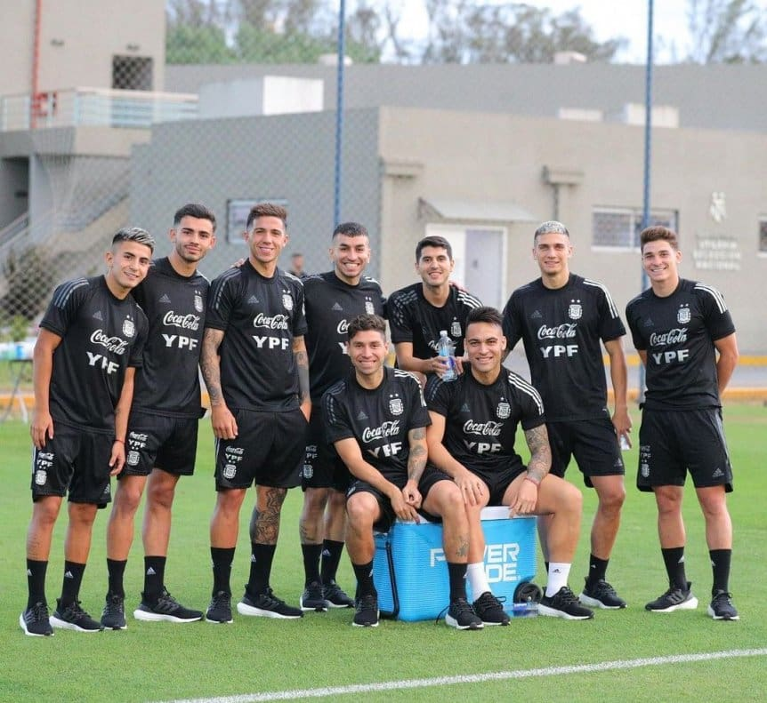
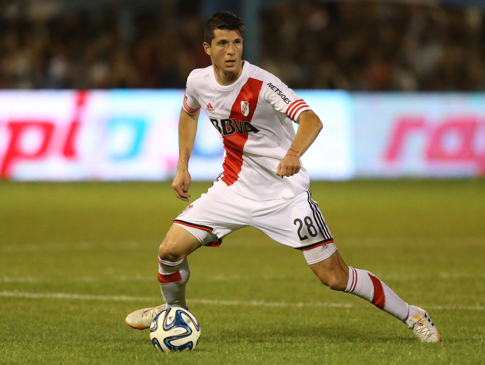

SELECCION / RIVER PLATE
Un jugador de la Selección Argentina elogió a Enzo Fernández: "Lo está haciendo muy bien en River"
Guido Rodríguez, volante de la Albiceleste y con pasado en el Millonario, destacó el gran presente del mediocampista de apenas 21 años.

27 de Abril - 11:16h. / Sportia Selección
Enzo Fernández sigue destellando en el mediocampo de River y no solo Marcelo Gallardo se deshace en elogios para con su juego vistoso y creativo. Los halagos también llegan desde la Selección Argentina, más precisamente de Guido Rodríguez, un habitual convocado por Lionel Scaloni y surgido de las Inferiores millonarias.
Desde su casa en España, el flamante campeón de la Copa del Rey con Betis destacó la actualidad del mediocampista de apenas 21 años, que ya fue citado a la Albiceleste en una oportunidad junto a Santiago Simón (para la doble fecha de clásicos ante Uruguay y Brasil) pero todavía no pudo debutar: "Enzo Fernández lo está haciendo muy bien en River y también demostró cuando vino a la Selección, en los entrenamientos lo hizo bárbaro".
Además, en diálogo con TNT Sports, Rodríguez vertió su opinión sobre si lo ve con la camiseta nacional en la próxima convocatoria antes del Mundial de Qatar 2022: “Eso después es algo que el técnico elige y decide, ellos tienen la última palabra, pero sé que lo está haciendo muy bien al igual que muchísimos chicos. Hay que seguir trabajando”.

El paso de Guido Rodríguez por River
Luego de demostrar sus condiciones en la cantera riverplatense, Guido debutó oficialmente en el Millonario el 9 de octubre de 2014, de la mano de Marcelo Gallardo, en un empate 0-0 con Rosario Central por Copa Argentina.
En total fueron 19 partidos bajo el ala del Muñeco, que no le dio demasiado protagonismo en el equipo titular ya que tenía por delante a Leonardo Ponzio y Matías Kranevitter. En 2016, luego de tres títulos y un gol a Atlético Rafaela, se marchó a préstamo a Defensa y Justicia. En Florencio Varela pudo demostrar todo su potencial y finalmente pegó el salto al exterior temporadas más tarde, con destino a Tijuana de México, que le pagó a River cerca de dos millones de dólares por su pase.

COMENTARIOS
Comentar las notas de Sportia es exclusivo para usuarios logueados.